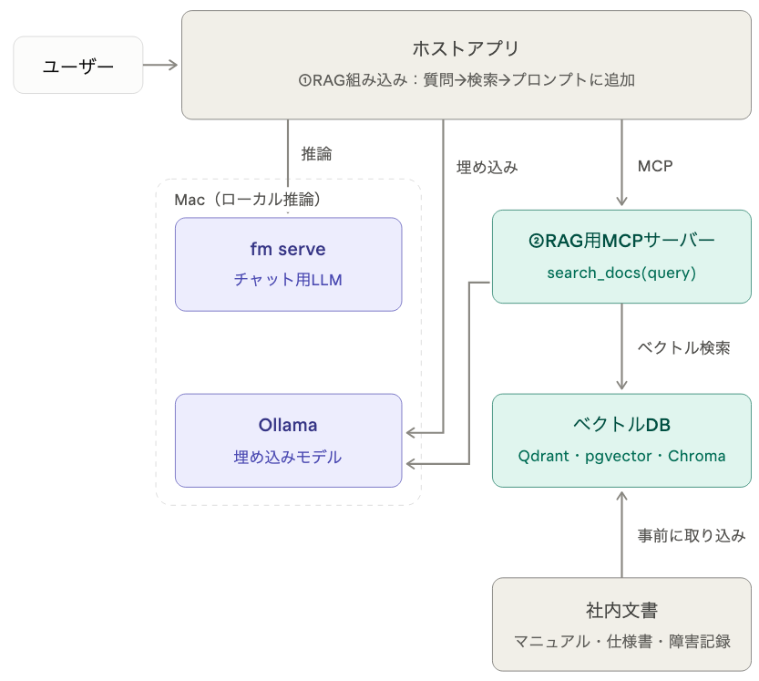

📙 概要2. macOS 27のLLMを使う¶
2026/11/27公開 2026/11/27更新
質問者: Shigeru Morifuku
回答者: Claude Opus 5.5
回答日: 2026/9/30
免責: 回答者は AI であり、間違えることがあります。
🟩 Q: macOS 27のLLMを使ってみたい¶
Ollamaの位置、つまり「ホストアプリから推論APIで呼ばれるLLMの実行役」には、fm serve をそのまま置けます。ただし、Ollamaのように好きなオープンモデルを付け替える装置ではありません。
相当する部分
fmはmacOS 27から入った標準コマンドで、/usr/bin/fm に置かれ、Appleのオンデバイス基盤モデルを呼び出します。最初から入っていて、APIキーもアカウントもトークン課金も要りません。fm serveを実行すると、OpenAI互換のChat Completionsサーバーがhttp://127.0.0.1:1976で起動します。接続できるのは自分のマシン内（ループバック）からだけです。既存のOpenAI向けクライアントは、ベースURLをhttp://127.0.0.1:1976/v1に変えるだけで使えます。この点はOllamaのlocalhost:11434と同じ使い方です。
Ollamaとの違い
モデルを付け替えられない：使えるのは、オンデバイスのApple Foundation Model（
system、既定で無料・プライベート）と、Private Cloud Compute上の大きいモデル（pcc、1日の上限あり、引き上げには有料のiCloud+が必要）の2つです。LlamaやQwenを入れて動かすことはできません。pccはローカルではない：Appleのクラウドで処理されます。「データを社外に出さない」という条件ならsystemに限られます。RAG図の「埋め込みモデル」は代わりにならない：埋め込み（embeddings）については記載が見当たりません。RAGを組むなら、埋め込みは別途Ollamaなどで動かす必要があります。
tool callingは未確認：ツール呼び出しはFoundation Modelsフレームワーク全体の機能としては説明されていますが、
fmCLIやfm serveで使えるかは明記されていません。MCP経由のエージェント構成で使えるかは、手元でtoolsを付けたリクエストを送って確かめるのが確実です。モデルが小さい：オンデバイスのモデルは小型なので、要約・抽出・分類のような軽い仕事向きです。実際に試した人からは1秒ほどで答えるが、lsofをLinuxのツールだと答えたという報告もあります。
図に当てはめると
Macの上なら、Ollamaの箱を「fm serve（チャット用LLM）＋Ollama（埋め込みモデル）」に分けて置く形になります。LLMの部分は fm serve で済みますが、Ollamaを丸ごと置き換えることはできません。

前の図にあったOllamaの箱を、点線の「Mac（ローカル推論）」の枠の中で2つに分けました。上の fm serve がチャット用LLM、下のOllamaが埋め込みモデルです。Ollamaへの矢印は2本あり、①の構成ではホストアプリから、②の構成ではRAG用MCPサーバーから届きます。
この構成で全部をローカルに閉じたいなら、fm serve では system モデルを指定してください。pcc を指定するとAppleのクラウドで処理されます。